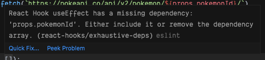

React - Week 3
What will we learn today?
Recap
Last week we looked at using props and state to create React components that change with user input (interactive example):
import React, { useState } from "react";
function Counter() {
const [count, setCount] = useState(0);
function increment() {
setCount(count + 1);
}
return (
<div>
<p>You clicked {count} times</p>
<button onClick={increment}>Click me</button>
</div>
);
}
export default Counter;
Fetching Data in React
Often when you create a React app, you will want to fetch data from an API and display it inside your components. How do we do this in React?
You might think that we could just fetch the data in the component like this, but unfortunately it won't work (interactive example):
:::danger This code won't work! :::
function MartianPhotoFetcher() {
let imgSrc = null;
fetch(
`https://api.nasa.gov/mars-photos/api/v1/rovers/curiosity/photos?earth_date=2015-6-3&api_key=DEMO_KEY`
)
.then((res) => res.json())
.then((data) => {
imgSrc = data.photos[0].img_src;
});
console.log(`The image src is ${imgSrc}`);
return <img src={imgSrc} />;
}
This is because React is synchronous, while fetch is asynchronous. If we look in the console, we'll see that the imgSrc will always be null when we try to render it. React will try to render before fetch has had time to get the data from the API.
We need a way of running the fetch call after we have rendered for the first time, so that it is not racing against React updating the DOM. Then once we have got the data back we can use state to tell React to re-render with the new data.
The way we do this is with another Hook, provided by React. This one is called useEffect.
Importing useEffect
Just like useState, we will import useEffect into our file like this (interactive example):
import React, { useEffect } from "react";
console.log(useEffect);
If we look in the console, we'll see that useEffect is also a function like useState.
Often, we will need to use useState and useEffect together. They are imported together like this:
import React, { useState, useEffect } from "react";
Using useEffect
Now let's look at how to use the useEffect Hook (interactive example):
function MartianPhotoFetcher() {
useEffect(() => {
fetch(
`https://api.nasa.gov/mars-photos/api/v1/rovers/curiosity/photos?earth_date=2015-6-3&api_key=DEMO_KEY`
)
.then((res) => res.json())
.then((data) => {
console.log(data);
});
}, []); // Always remember to put an empty array here!
return <div>Hello useEffect!</div>;
}
The useEffect Hook takes two arguments:
- A callback function, where we can put our
fetchcall. In this example, we're fetching some data from the NASA API! 🚀 - An array, which we'll look at later but is very important that you don't forget it!
:::tip
When writing your useEffect, write the "skeleton" first, then fill in the callback function later.
// Write this bit first!
useEffect(() => {
// Write this bit later!
}, []);
:::
You might have noticed that we still haven't rendered the data from the API. We now need to tell React to re-render once we get the data. This sounds like a job for state!
Let's look an example of how we can use state and useEffect to do this (interactive example):
function MartianPhotoFetcher() {
const [marsPhotoData, setMarsPhotoData] = useState(null);
useEffect(() => {
console.log("Fetching data from NASA");
fetch(
`https://api.nasa.gov/mars-photos/api/v1/rovers/curiosity/photos?earth_date=2015-6-3&api_key=DEMO_KEY`
)
.then((res) => res.json())
.then((data) => {
setMarsPhotoData(data);
});
}, []);
if (marsPhotoData) {
return <img src={marsPhotoData.photos[0].img_src} alt="Martian surface" />;
} else {
return null;
}
}
The timeline of this component is now what we wanted at the start:
- The component renders for the first time. Notice that we are returning
nullhere: if a component returnsnull, then React will render nothing on-screen - After rendering, the
useEffectcallback is run, so it fetches data from the NASA API - When the response is received, we update the state
- This causes a re-render so that we can show the data on-screen
You might notice that even though we re-rendered, we did not run the useEffect a second time. The way we've set it up, useEffect will only run after the first time a component renders. We'll look at controlling this in more detail later.
| Exercise A (estimate: 15 min) |
|---|
1. Open the pokedex React application again. |
2. Create a new file src/PokemonMoves.js, and copy/paste the code from this CodeSandbox. |
3. Render the PokemonMoves component inside the App component (underneath CaughtPokemon). |
4. Take a few minutes to read the code in the new PokemonMoves component. Discuss with another student why you think it doesn't work. |
5. Create a new state variable called pokemonData and initialise it to null. Click here if you are stuck.Check last week's lesson for a reminder on creating state variables. |
6. Now add a useEffect call, but leave the callback function empty for now. Make sure you remember to add the empty array after the callback function. |
7. Inside the useEffect callback, call the fetch function with this URL: https://pokeapi.co/api/v2/pokemon/1/. |
8. Add a .then handler into the fetch function (remember this needs to come immediately after the fetch call) which converts the response from JSON (hint: .then(res => res.json())). |
9. Add a second .then handler after the one we just added, where the callback function will receive an argument called data. |
11. Within the second .then callback function, log out the data that we just received (hint: console.log(data)). Inspect the data in the dev tools console. Is there any interesting data? (Hint: think about what the component is trying to render). |
12. Still within the second .then callback, set the pokemonData state to be the data object we received from the API. |
| 13. What happens in your browser? Do you understand why? If not, discuss it with another student. If you are both stuck, ask a Teaching Assistant. |
Conditional rendering
In the MartianPhotoFetcher component above, we wrapped our JSX inside an if / else statement. This is common practice in React, as it allows us to show something different depending on the situation (for example if there is no data to display, show the user something else instead).
You may also see this done in 2 other ways:
The ternary operator ? :
The ternary operator follows this structure condition ? outputIfTrue : outputIfFalse (interactive example):
return (
<div>
{marsPhotoData ? (
<img src={marsPhotoData.photos[0].img_src} alt="Martian surface" />
) : (
<span>Loading...</span>
)}
</div>
);
The double ampersand &&
The double ampersand && is used when you don't have an else. The implication is that when the condition is not fulfilled, nothing will render (interactive example):
return (
<div>
{marsPhotoData && (
<img src={marsPhotoData.photos[0].img_src} alt="Martian surface" />
)}
</div>
);
You'll notice in the && example above, we do not render a 'Loading...' message, because there is no alternative output (no else case).
| Exercise B (estimate: 5 min) |
|---|
1. Open the pokedex application and the src/PokemonMoves.js file. |
2. Change the if / else statement in your JSX to use the ternary operator (condition ? outputIfTrue : outputIfFalse) instead. |
The Circle of Life
We now know how to fetch data and render it in our React applications. However, there was a problem with the method that just learned. To understand this problem we first have to understand the lifecycle of a component.
Let's take a look at an example:
| Exercise C (estimate: 10 min) |
|---|
| 1. Open this CodeSandbox. |
| 2. Take 5 minutes to read the code. |
| 3. Click the "Fetch image for 2019" button. If you're feeling confident: predict what is going to happen before you click the button. |
| 4. Now click the "Fetch image for 2020" button. What did you expect to happen? What actually happened? Can you explain why? |
Together let's "play computer" to break down exactly what is happening with these components:
- When the page loads, the
Appfunction component is called - It doesn't have any
datestate already, so we initialise it to an empty string ("") withuseState - It renders the 2 buttons, but because
dateis an empty string, it does not render theMartianImageFetchercomponent. Insteadnullis returned, which means that nothing is rendered
function App() {
const [date, setDate] = useState("");
...
return (
<div>
<button onClick={handle2019Click}>Fetch image for 2019</button>
<button onClick={handle2020Click}>Fetch image for 2020</button>
{date ? <MartianImageFetcher photoDate={date} /> : null}
</div>
);
}
- When we click the "Fetch image for 2019" button, the
handle2019Clickclick handler is called - The state is set by
setDateto be"2019-01-01", and a re-render is triggered - The
Appfunction component is called again - This time,
useStateremembers that we havedatestate and it is set to"2019-01-01"
function App() {
...
function handle2019Click() {
setDate("2019-01-01");
}
...
return (
...
<button onClick={handle2019Click}>Fetch image for 2019</button>
...
);
}
- Now
Appdoes renderMartianImageFetcherand passes thedatestate as a prop namedphotoDate - The
MartianImageFetcherfunction component is called for the first time useStateknows that we haven't got anyimgSrcstate so initialises it tonull- We queue an effect, which will run after we render for the first time
- Because the
imgSrcstate is set tonull, we returnnull. This means that nothing is rendered
function MartianImageFetcher(props) {
const [imgSrc, setImgSrc] = useState(null);
useEffect(() => {
...
}, []);
if (!imgSrc) {
return null;
} else {
return <img src={imgSrc} />;
}
}
- Now that the component has rendered for the first time, the effect is run
- A
fetchrequest is made to the NASA API - When the request data comes back, we set the
imgSrcstate to a piece of the data, which triggers a re-render
function MartianImageFetcher(props) {
...
useEffect(() => {
fetch(
`https://api.nasa.gov/mars-photos/api/v1/rovers/curiosity/photos?earth_date=${
props.date
}&api_key=gnesiqnKCJMm8UTYZYi86ZA5RAnrO4TAR9gDstVb`
)
.then(res => res.json())
.then(data => {
setImgSrc(data.photos[0].img_src);
});
}, []);
...
}
- The
MartianImageFetcherfunction component is called again useStateremembers that theimgSrcstate is set to the data from the API- This time, we do not queue an effect. We set up
useEffectwith an empty array ([]), which means that we only run after the first render - We do have
imgSrcstate set, so we render the image using the data from the API 🎉
function MartianImageFetcher(props) {
const [imgSrc, setImgSrc] = useState(null);
...
if (!imgSrc) {
return null;
} else {
return <img src={imgSrc} />;
}
}
Phew! That was a lot of work just to render an image! But we're not quite done yet, we still need to find out what happens when we click the "Fetch image for 2020" button:
- In the
Appcomponent, thehandle2020Clickclick handler is called - The
datestate is set to"2020-01-01"and a re-render is triggered - The
Appfunction component is called again and thedatestate is set to"2020-01-01" - The
dateprop that is passed toMartianImageFetcheris different which means that it has to re-render
function App() {
...
function handle2020Click() {
setDate("2020-01-01");
}
...
return (
...
<div>
...
<button onClick={handle2020Click}>Fetch image for 2020</button>
...
{date ? <MartianImageFetcher photoDate={date} /> : null}
...
</div>
...
);
}
- In the
MartianImageFetchercomponentuseStateremembers that we already hadimgSrcstate. It is set to the image from 2019 - Again, we do not queue the effect because this is a re-render and
useEffecthas been passed an empty array[] - Because
imgSrcstate has been set previously we render the image from 2019
function MartianImageFetcher(props) {
const [imgSrc, setImgSrc] = useState(null);
useEffect(() => {
...
}, []);
return <img src={imgSrc} />;
}
| Exercise D (estimate: 5 min) |
|---|
| 1. Did you spot where the bug was? Discuss with a group of 2 - 3 students where you think the bug is. |
| 2. Report back to the rest of the class where you think the bug happened. |
Click here to reveal the answer!
The key that the `useEffect` in `MartianImageFetcher` is **only run once**. This is because we told React that the queue should be queued on the first render only. However, as we saw, sometimes you need the effect to run again when some data changes. In this case the `date` prop, changed from `"2019-01-01"` to `"2020-01-01"`, meaning that we have to fetch data different data. We call this a _dependency_ of the effect. Any variables which are used inside the `useEffect` callback function are dependencies.useEffect dependencies array
To solve this problem, we can tell React to queue the effect on the first render and when a dependency changes. We do this by adding the dependency variable to the array (interactive example):
function MartianImageFetcher(props) {
const [imgSrc, setImgSrc] = useState(null);
useEffect(() => {
...
}, [props.photoDate]);
...
}
Now when the photoDate prop changes, React knows that the effect must be run again, this time with the 2020 date. Because of this behaviour, the second argument to useEffect is called the dependencies argument. We use it whenever we have something in our effect function that depends on a variable outside of the effect function.
Here's a diagram showing when the useEffect callback will be run:
To help you understand this better, try "playing computer" again, but this time think about what happens when we use [props.photoDate] for the dependencies argument. Think carefully about what changes with step 6 after we click the 2020 button.
| Exercise E (estimate: 10 min) |
|---|
1. Open the pokedex React application. |
2. Create a new file src/PokemonMovesSelector.js. Copy/paste the code from this CodeSandbox into the new file. |
3. Open src/App.js and replace the PokemonMoves component with the PokemonMovesSelector component (remember to update the import too!) |
4. Take a few minutes to read what the PokemonMovesSelector component does. If you have questions, ask a Teaching Assistant to help. We won't need to make any more changes to this component. |
5. Open the PokemonMoves component again. Change the URL to use backticks (`...` ) instead of double-quotes ("..."). Then replace the hard-coded number 1 with ${props.pokemonId}. What will this do? Click here if you don't knowThe URL will contain thepokemonId instead of always fetching the Pokemon with id of 1 |
6. Open your browser and find where the PokemonMovesSelector component is rendered. Before you click the buttons, think about what you expect will happen. Then click the "Fetch Bulbasaur" button to find out what actually happens. |
| 7. Refresh the page. What happens now if you click the "Fetch Bulbasaur" button, then click the "Fetch Charmander" button? Is this what you expected? Discuss with another student why this happens. |
8. Fix the bug by adding props.pokemonId to the useEffect dependencies array in PokemonMoves. Remember that you can test if the bug still happens by refreshing the page, clicking one of the buttons, then the other button. |
ESLint rules for React Hooks
As you may have noticed, VSCode highlighted the empty dependencies array when you changed the URL passed to fetch in PokemonMoves.
This is because your React application is using the rules from eslint-plugin-react-hooks, a package created by the developers who make React. It helps you to find bugs in React Hooks code by highlighting places where you might be missing dependencies.
If you see a red squiggly line underneath your useEffect dependencies array, you can hover your mouse over and it will tell you which variable is missing so you can add it to the dependencies array. Here's an example:

Working with forms in React
Modern web applications often involve interacting with forms such as creating an account, adding a blog post or posting a comment. This would involve using inputs, buttons and various form elements and being able to get the values entered by users to do something with it (like display them on a page or send them in a POST request). So, how do we do this in React?
Controlled component pattern
A popular pattern for building forms and collect user data is the controlled component pattern. A pattern is a repeated solution to a problem that is useful in multiple similar cases. Let's have a look at an example (interactive example):
function SimpleReminder() {
const [reminder, setReminder] = useState("");
function handleChange(event) {
setReminder(event.target.value);
}
return (
<form>
<input
type="text"
placeholder="Some reminder"
value={reminder}
onChange={handleChange}
/>
<p>Today I need to remember to... {reminder}</p>
</form>
);
}
We're controlling the value of the input by using the value from the reminder state. This means that we can only change the value by updating the state.
It is done using the onChange attribute and the handleChange function which is called every time the input value changes (typically when a new character is added or removed).
If we didn't call setReminder in the handleChange function, then the input's value would never change and it would appear as if you couldn't type in the input! Finally, the value we keep in the reminder state is displayed on the screen as today's reminder.
In addition, instead of just saving the value of the input in the state, we could have also transformed the string before we set it with setReminder, for example by calling toUpperCase() on the string.
| Exercise F (estimate: 10 min) |
|---|
1. Open the pokedex React application. |
2. Create a new file src/PokemonCity.js. Copy/paste the code from this CodeSandbox into the new file. |
3. Open the src/App.js file and render the new PokemonCity component (underneath PokemonMovesSelector). |
4. Take a few minutes to understand what the PokemonCity component does. |
5. Add an <input type="text" /> element above the <p> element. |
6. Set the value attribute of the <input> to the city state. |
7. Create a function within the component called updateCity. Pass this function to the onChange event handler. |
8. Change the updateCity component so that it has a parameter named event. |
9. Add a console.log to inspect the value of event.target.value. What happens when you type in the input? |
10. Using setCity, update the city state to what was typed in the input box. |
Form with Multiple Fields
Let's have a look at a more complex example where we want to build a form to let users enter information to create a personal account (interactive example):
function CreateAccountForm() {
const [username, setUsername] = useState("");
const [email, setEmail] = useState("");
const [password, setPassword] = useState("");
function handleUsernameChange(event) {
setUsername(event.target.value);
}
function handleEmailChange(event) {
setEmail(event.target.value);
}
function handlePasswordChange(event) {
setPassword(event.target.value);
}
return (
<form>
<div>
<input
type="text"
name="username"
placeholder="Username"
value={username}
onChange={handleUsernameChange}
/>
</div>
<div>
<input
type="text"
name="email"
placeholder="Email"
value={email}
onChange={handleEmailChange}
/>
</div>
<div>
<input
type="password"
name="password"
placeholder="Password"
value={password}
onChange={handlePasswordChange}
/>
</div>
</form>
);
}
We now have three different inputs named username, email and password. There is a corresponding state variable and change handler function for each value.
| Exercise G (estimate: 10 min) |
|---|
1. Open the pokedex React application again and open the src/CaughtPokemon.js file. |
2. Render an <input> before the <button> (hint: <input type="text" />). |
3. Create a new state variable called pokemonNameInput and initialise to an empty string (""). |
4. Add a value attribute to the <input> which is set to the pokemonNameInput state variable. (Hint: value={pokemonNameInput}) |
5. Create a new handleInputChange function within the component. |
6. Add a onChange handler to the <input> that will call handleInputChange. |
7. Add a parameter called event to the handleInputChange function. Set the pokemonNameInput state variable to event.target.value. Try typing in the <input> again. What happens now? |
8. Change the catchPokemon function to add the pokemonNameInput state to the caught array (hint: change the value that we are passing to the concat method) |
9. Open your browser, type a Pokemon name into the <input> and click on the "Catch Pokemon" button. Do you see your new Pokemon being added to the list? |
10. Empty the <input> after clicking on the button. To do this, set the state of pokemonNameInput to an empty string "" after we have added it to the caught array in the catchPokemon function. |
11: (STRETCH GOAL) Make sure the user cannot add a Pokemon to the caught state if the value of pokemonNameInput state is empty. |
Inlining event handlers
We could make our code a bit shorter if we inlined our event handlers (interactive example):
<input
type="text"
name="username"
placeholder="Username"
value={username}
onChange={(event) => setUsername(event.target.value)}
/>
Centralising event handlers
Sometimes we need to put all of our update logic in one function, maybe because we need to validate the user's input before we set it in state.
We can use a single handleChange function, that is reused to keep track of changes for all of the form fields. To be able to tell which <input> is being updated, we check the event.target.name field. This corresponds to the name attribute on the <input> (e.g. <input name="username">).
Based on this value, we then decide which state to update (interactive example):
function handleChange(event) {
if (event.target.name === "username") {
setUsername(event.target.value);
} else if (event.target.name === "email") {
setEmail(event.target.value);
} else if (event.target.name === "password") {
setPassword(event.target.value);
}
}
Form submission
So far, our form examples don't have a way of sending the user data back to the server, so that we can store it in the database.
We will be using a special submit event triggered on the <form> element. This event is triggered when the user clicks a submit button or if they hit the Enter key. Let's take a look at an example (interactive example):
function CreateAccountForm() {
...
function handleSubmit(event) {
event.preventDefault();
console.log("Sending data to server");
fetch("https://httpstat.us/200", {
method: "POST",
body: JSON.stringify({
username: username,
email: email,
password: password
}),
headers: {
"Content-Type": "application/json"
}
});
}
return (
<form onSubmit={handleSubmit}>
...
<button>Submit</button>
</form>
);
}
We set up our <form> to handle the event by passing the handleSubmit function to the onSubmit prop. If we click on the Submit button or hit Enter while focused on the form, the event is triggered and the handleSubmit function is called.
The first thing we do inside the handler function is call event.preventDefault(). This is necessary because the browser has a default action when the submit event is triggered on the form to send a GET request to the server. We prevent the default action because we will handle the event ourselves.
We can then do whatever we want with our user data! In this example, we're sending a POST request using the fetch method.
Further Reading
Container components
There is a common pattern when loading data in React applications, called container components.
Multiple fields as state pattern
There is another common pattern for handling multiple fields in a form, but it requires some JavaScript functionality that you may not have seen before.
Homework
- If you haven't already, complete the in-class exercises on your
pokedexapp - Complete all of the lesson 3 exercises in the cyf-hotel-react project
- Try to complete the Stretch Goal exercises in the cyf-hotel-react homework